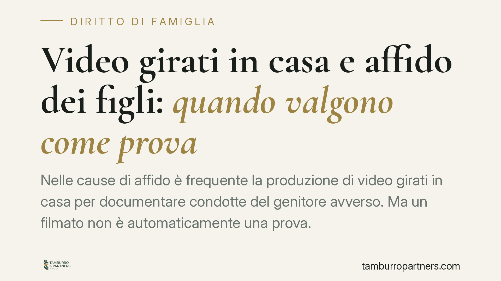

Video girati in casa e affido dei figli: quando valgono come prova
Nelle cause di affido è frequente la produzione di video girati in casa per documentare condotte del genitore avverso. Ma un filmato non è automaticamente una prova. Tra tutela della riservatezza, disconoscimento di conformità e bilanciamento con il diritto di difesa, l'utilizzabilità va verificata caso per caso. Ecco i criteri giuridici che orientano i giudici e cosa conviene sapere prima di produrre materiale del genere.

Il problema: il video come prova nell'affido
Nei procedimenti di separazione e affido capita spesso che un genitore raccolga filmati domestici per dimostrare comportamenti dell'altro ritenuti pregiudizievoli per il minore: scenate, trascuratezza, episodi di tensione.
Il punto è che l'esistenza materiale di un video non coincide con la sua utilizzabilità processuale. Due profili restano distinti e vanno tenuti separati: la conformità della riproduzione ai fatti rappresentati (profilo probatorio in senso stretto) e la liceità del mezzo con cui il materiale è stato acquisito (profilo della legittimità della prova).
Su entrambi i fronti la giurisprudenza richiede verifiche puntuali. Prima di affidarsi a un filmato, conviene capire su quale terreno ci si muove.
Inquadramento normativo
Il valore probatorio: art. 2712 c.c. Le riproduzioni meccaniche — tra cui i video — formano piena prova dei fatti rappresentati solo se chi ne è pregiudicato non ne disconosce la conformità. Il disconoscimento, però, non può essere generico: secondo l'orientamento consolidato della Corte di Cassazione, deve essere specifico, circostanziato e tempestivo, indicando quali elementi del filmato non corrispondono alla realtà (ad esempio montaggi, alterazioni, decontestualizzazioni). Un disconoscimento vago o tardivo non priva la riproduzione del suo valore probatorio.
La liceità dell'acquisizione: riservatezza e dati personali. Un video che riprende persone terze o che è stato ottenuto in violazione della riservatezza solleva un problema diverso, a monte. Vengono in rilievo il Regolamento UE 2016/679 (GDPR) e il Codice Privacy (D.Lgs. 196/2003), in particolare gli artt. 2-bis e seguenti. Il trattamento di dati personali per finalità difensive è ammesso — l'art. 6 GDPR e la disciplina sulle finalità di difesa in giudizio ne costituiscono il fondamento — ma entro limiti di proporzionalità. La ripresa di soggetti estranei alla lite, o effettuata con modalità invasive, può risultare eccedente rispetto allo scopo.
Il bilanciamento. Il cuore del tema è l'equilibrio tra il diritto di difesa (art. 24 Cost.) e il diritto alla riservatezza. Una prova acquisita illecitamente non diventa utilizzabile per il solo fatto di servire alla difesa: il giudice valuta se la compressione della riservatezza fosse proporzionata e necessaria. In materia di famiglia, questo bilanciamento è ulteriormente orientato dall'interesse superiore del minore, che resta il criterio guida di ogni decisione sull'affido.
> Nota. Alla data di redazione circolano riferimenti a una pronuncia della Cassazione in tema (indicata come ord. n. 4980/2026). Gli estremi non risultano al momento verificabili: li segnaliamo come da confermare e non li assumiamo a fondamento autonomo di quanto esposto, che si basa sull'orientamento giurisprudenziale consolidato e sulle norme sopra richiamate.
Cosa cambia per il genitore in causa
La conseguenza pratica è duplice.
Sul piano probatorio, un video prodotto in giudizio non "parla da solo": se la controparte lo disconosce in modo specifico, spetta a chi lo ha prodotto fornire ulteriori riscontri, ad esempio attraverso una verifica tecnica sulla genuinità del file.
Sul piano della liceità, un filmato che espone persone estranee o invade spazi di riservatezza altrui rischia l'esclusione dagli atti, con un possibile effetto controproducente sulla posizione di chi lo ha prodotto.
Perizia di parte e CTU: non sono la stessa cosa
Spesso i filmati vengono accompagnati da una relazione tecnica di parte, commissionata da uno dei genitori. È bene chiarirne il peso.
La perizia di parte è un atto difensivo: non è giurata e il giudice la considera alla stregua di una mera allegazione, da valutare liberamente ma priva di valore probatorio autonomo.
La CTU (consulenza tecnica d'ufficio) è invece disposta dal giudice e affidata a un professionista imparziale: è lo strumento che, nei procedimenti di famiglia, offre le maggiori garanzie di terzietà, specie nella valutazione delle capacità genitoriali e dell'interesse del minore.
Cosa fare in concreto
- Verificate la liceità prima di produrre. Accertatevi che il materiale non riprenda terzi estranei né invada spazi di altrui riservatezza in modo sproporzionato rispetto alla finalità difensiva.
- Conservate il file originale. Mantenete la versione integra, con metadati e data, per rispondere a un eventuale disconoscimento di conformità.
- Non montate né tagliate. Alterazioni e selezioni indeboliscono la prova e facilitano il disconoscimento specifico della controparte.
- Valutate la CTU. Per dimostrare profili attinenti alla capacità genitoriale, lo strumento tecnico d'ufficio è più solido di una perizia di parte.
- Sottoponete il materiale a un legale prima del deposito. Una valutazione preventiva su utilizzabilità e proporzionalità evita produzioni dannose.
In sintesi
Nelle cause di affido il video può essere uno strumento utile, ma solo se lecitamente acquisito e tecnicamente difendibile. L'interesse del minore resta il parametro decisivo: ogni valutazione sulla prova si misura su quel criterio, non sull'intensità della raccolta documentale.
---
*Contributo informativo a cura di Tamburro & Partners — Avv. Giuseppe Tamburro. Non costituisce parere legale.*
Ogni famiglia ha il suo equilibrio.
Separazione, divorzio, affidamento, assegno: se vuoi un confronto riservato su una specifica situazione, scrivi allo studio. Ti rispondiamo entro un giorno lavorativo.